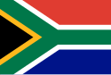

Africa do Sul
África do Sul, oficialmente República da África do Sul e mais raramente referida como Suláfrica,[8][9] é um país localizado no extremo sul da África, entre os oceanos Atlântico e Índico,[10] com 2 798 quilômetros de litoral.[11][12] É limitado pela Namíbia, Botsuana e Zimbábue ao norte; Moçambique e Essuatíni a leste; e com o Lesoto, um enclave totalmente rodeado pelo território sul-africano.[13] O país é conhecido por sua biodiversidade e pela grande variedade de culturas, idiomas e crenças religiosas. A Constituição reconhece 11 línguas oficiais.[10] Duas dessas línguas são de origem europeia: o africâner, uma língua que se originou principalmente a partir do neerlandês e que é falado pela maioria dos brancos e mestiços sul-africanos, e o inglês sul-africano, que é a língua mais falada na vida pública oficial e comercial, mas é apenas o quinto idioma mais falado em casa.[10]